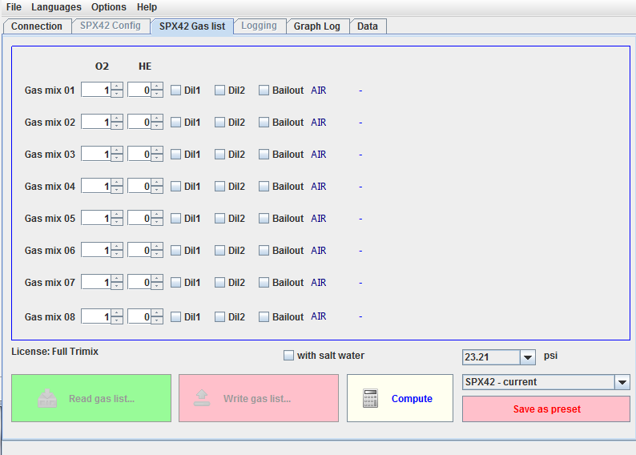

This tab summarizes the functions necessary for the SPX42's gas management.
The gas list is framed in different colours to distinguish between online
and offline mode, where BLUE corresponds to
offline, that is disconnected from the SPX42
and GREEN to online that is
connected to the SPX42.
Once in online mode, editing of gases can be done directly, that is on the
SPX42. The buttons 'Read gas list' and 'Write gas list' will be active.
Here again the functionality in the online mode depends on the SPX42's
available software licenses. In offline mode all settings are available
whereas online settings are restricted to those with proper license. Even
though it is possible to create presets that do not comply with currently
available licenses it is not possible to write those onto the SPX42.

Gas list Editor Tab OFFLINE
Contents
The idea behind gas presets is to prepare sets of settings for typical or
recurring dives without having to redo those over and over.
For example: The author switches between presets for shallow dives in
freshwater with air as diluent and Nitrox as bailout and presets for special
dives. A preset would be for long dives to depths of 60 m with Trimix 21/45
and two bailout gases.
Another possibility would be a preset for recurring dives at a specific
location that requires a certain composition of bailout gases or another for
the fast exchange to another SPX42 unit.
The example above shows a previously defined preset under the name
'Standard-Trimix-Normoxic'.
A gas list can be saved in the local data base under an arbitrary name by
clicking the 'Save as preset' button and can be written onto the SPX42 when
operated in online modus.
Contents
Terminology for gases is compliant with the usual standard:
"AIR" stands for air (21% oxygen, 78% nitrogen, 1% others)
"NX" stands for Nitrox, number displayed is percentage O2
"TX" stands for Trimix, first number O2 content, second Helium
content
"HX" stands for Helioxm, first number is O2 content, second Helium content
Contents
The MOD is calculated from the setting of salt/fresh water and the defined
value for the desired maximum of O2 partial pressure. This value is for both
bailout and diluent since during flushing for a brief moment the diluent alone
will be inhaled.
Contents
Once the button 'Compute' is clicked a window will pop up (see below) which
allows calculations for single gases.
Assuming that the composition of gases inside the closed breather loop is not
equal to that of the diluent, caused by the defined O2 setpoint (which means
depending on environment pressure and setpoint oxygen will be added), the
effective EAD (equivalent air depth) of diluent and actual gas composition
will not be equal.
This window allows computation of effective EAD using variable parameters.
As a guide the name of the gas used as a basis for the current computation is
displayed in the lower left side of the window.
Contents